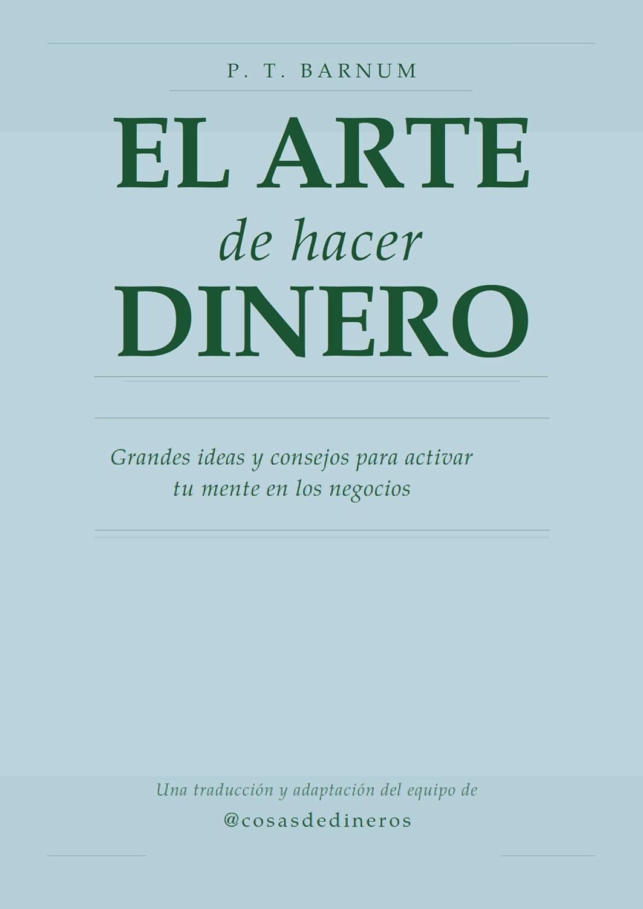
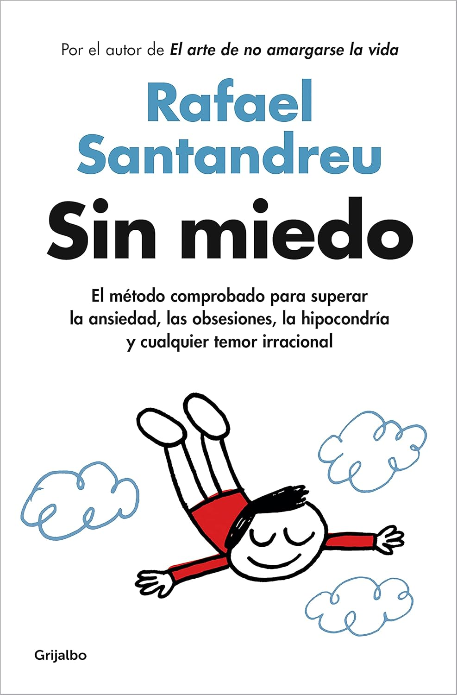
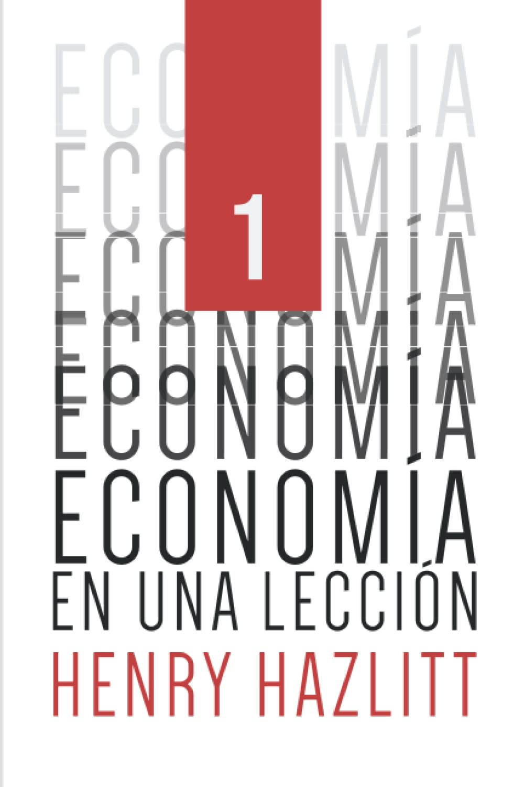

Algunos son tostón pero creo interesante leerlos para aprender cosas útiles.
Todos son links referenciados, así que si los compras desde aquí me llevo unos céntimos (literalmente) sin que a ti te cueste más y eso se agradece.
Si hay algún libro que tengas la duda de si merece la pena o no, escríbeme y me lo apunto en la lista, una vez leído te digo qué tal.
Mi libro
Finanzas para mi hermana — todo lo que necesitas saber sobre inversión sin el cuento chino de los bancos.
📖 Comprar en AmazonLibros traducidos y adaptados
Estos son libros que he traducido al español y en algunos casos he incorporado aclaraciones de cosas que eran muy técnicas y en otro caso las he borrado porque no aportaban.

El arte de hacer dinero de P.T. Barnum — Grandes ideas y consejos para activar tu mente en los negocios. Está publicado en 1880 así que hay que leerlo con los ojos de esa época. Es un libro que me pareció interesante aunque no es ninguna pócima mágica para hacerse millonario.
📖 Comprar en AmazonPsicología para el dinero
Lo más importante en inversiones es el mantenerse tranquilo y frío y en caso de liarla o perder dinero saber retomar el control de tu mente y no hundirte.
El aceptar pérdidas, a estar positivos y muchas cosas más que podrás leer en los libros que te dejo aquí abajo.

Sin miedo — Me he leído todos los libros de Rafael Santandreu y es verdad que está enfocado a las relaciones personales y a superar miedos, pero a mí me ha servido para aplicar todo eso al mundo de las inversiones.
Sin duda es un manual que se puede leer cada 2 años y aunque no hace magia sí que ayuda muchísimo en cosas como el autocontrol y el desarrollo de la inteligencia emocional.
📖 Comprar en Amazon
Economía y finanzas

Economía en una lección – Henry Hazlitt — Este libro habla de economía, de cómo funcionan los mercados, los precios... es un libro leíble por todos y si lo encuentras muy técnico tómatelo como un desafío y sigue adelante. No es un tochaco, es leíble y vas a aprender cositas.
📖 Comprar en Amazon
4000 años De Controles De Precios y Salarios - Robert L. Schuettinger y Eamonn F. Butler — El primer libro que se va leer mi hijo. Ejemplos claros y simples de cómo revientan la vida a las personas el control de precios.
📖 Comprar en Amazon